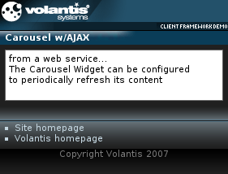

The Carousel widget displays a subset of a list of content items for a given period of time. At the end of the time period the displayed subset changes using the refresh action. Refresh intervals can be specified by the XDIME author.

<widget:carousel id="myWeatherCarousel"> <widget:refresh src="service/carousel?id=myWeatherCarousel" interval="30"/> <li>The Carousel Widget can be configured </li> <li>to periodically refresh its content</li> <li>by fetching data, such as weather conditions,</li> <li>from a web service...</li> </widget:carousel>
<style type="text/css" media="handheld,all">
#myWeatherCarousel {
mcs-transition-interval: 8s;
}
</style><widget:refresh src="service/carousel?id=myWeatherCarousel" interval="30"/>
<response:response xmlns="http://www.w3.org/2002/06/xhtml2"
xmlns:mcs="http://www.volantis.com/xmlns/2006/01/xdime/mcs"
xmlns:response="http://www.volantis.com/xmlns/2006/05/widget/response">
<response:head>
<response:link rel="mcs:theme" href="/main.mthm"/>
</response:head>
<response:body>
<response:carousel id="myWeatherCarousel">
<li><a href="http://www.budapest.hu">Budapest</a><li>
<li><a href="http://www.prague-city.cz">Prague</a><li>
</response:carousel>
</response:body>
</response:response>
<?xml version="1.0" encoding="UTF-8"?>
<html xmlns="http://www.w3.org/2002/06/xhtml2"
xmlns:mcs="http://www.volantis.com/xmlns/2006/01/xdime/mcs"
xmlns:template="http://www.volantis.com/xmlns/marlin-template"
xmlns:widget="http://www.volantis.com/xmlns/2006/05/widget">
<head>
<title>Carousel Widget with AJAX</title>
<link rel="mcs:theme" href="/themes/main.mthm"/>
<link rel="mcs:layout" href="/layouts/main.mlyt"/>
<style type="text/css" media="handheld,all">
#myWeatherCarousel {
mcs-effect-style: slide-right;
mcs-effect-duration: 5s;
height: 5em;
mcs-transition-interval: 8s;
padding: 4px;
}
#myWeatherCarousel:mcs-concealed{
mcs-effect-style: slide-left;
mcs-effect-duration: 5s;
}
</style>
</head>
<body>
<template:apply href="templates/demo-main.xdtpl">
<template:binding name="title" value="Carousel w/AJAX"/>
<template:binding name="content">
<template:complexValue>
<widget:carousel id="myWeatherCarousel" class="widget">
<widget:refresh src="service/carousel?id=myWeatherCarousel"
interval="30"/>
<li>The Carousel Widget can be configured </li>
<li>to periodically refresh its content</li>
<li>by fetching data, such as weather conditions,</li>
<li>from a web service...</li>
</widget:carousel>
</template:complexValue>
</template:binding>
</template:apply>
</body>
</html>
| Name | Purpose |
|---|---|
| li | A list item in an ordered, unordered or navigation list. |
| response:carousel | Allows a Carousel widget to refresh its content. |
| widget:carousel | Defines a Carousel widget that displays a subset of a list of items. The contained li elements have a restricted content model, when used in a carousel. The li does not need to be enclosed in the nl, ol, or ul elements. |
| widget:refresh | Allows a widget to update its contents. |
| Core attributes | Attributes that are common to XDIME 2 elements. |